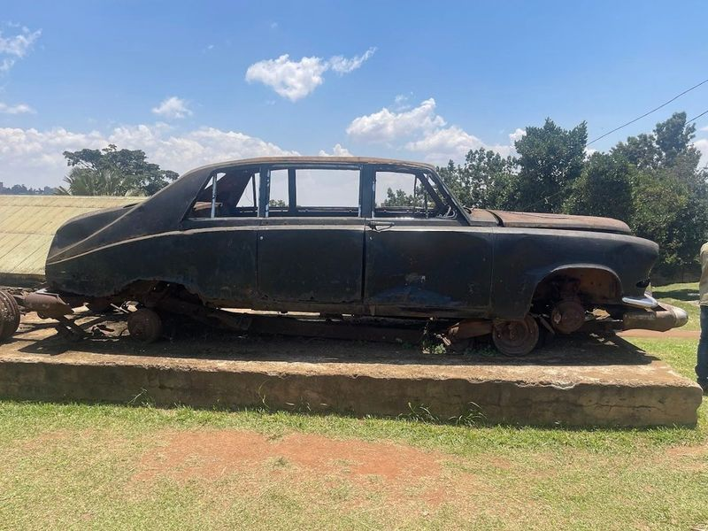
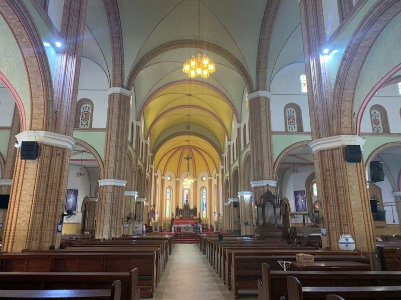
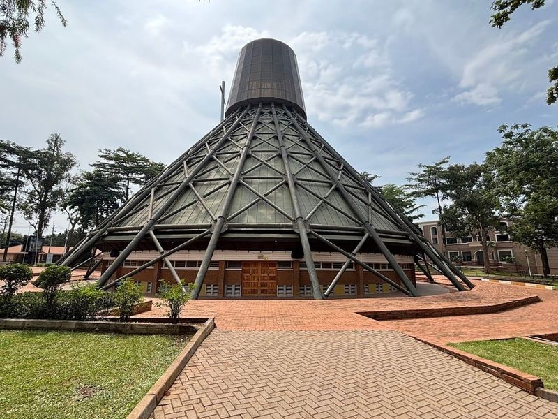
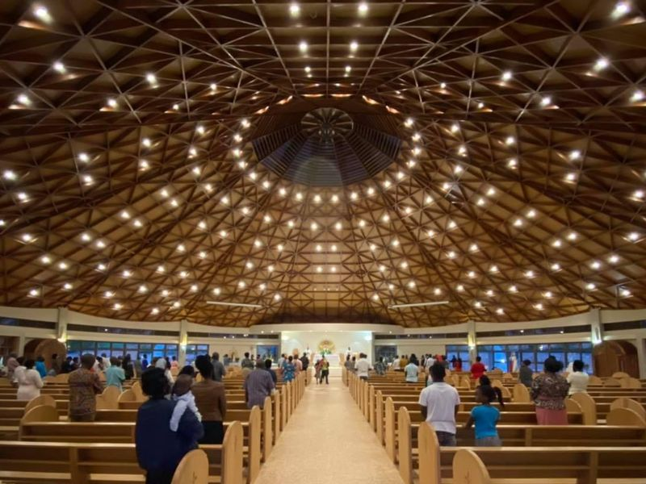
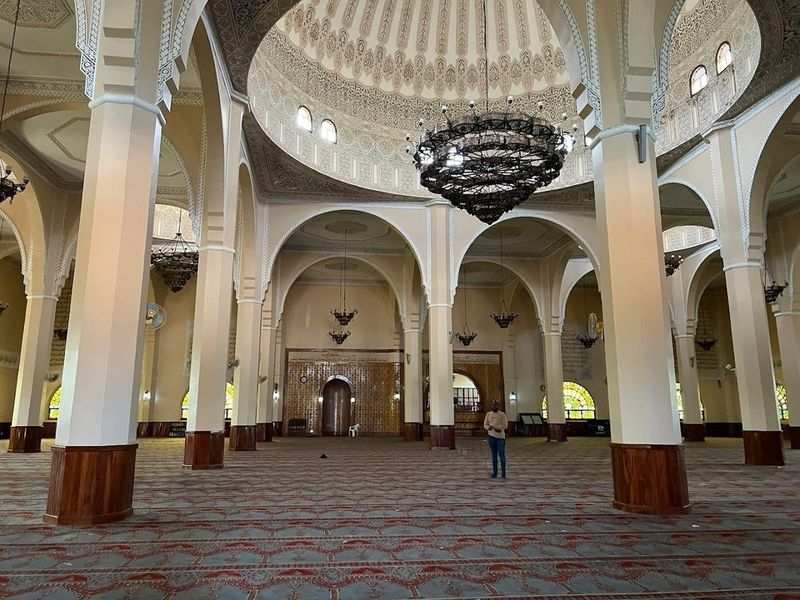
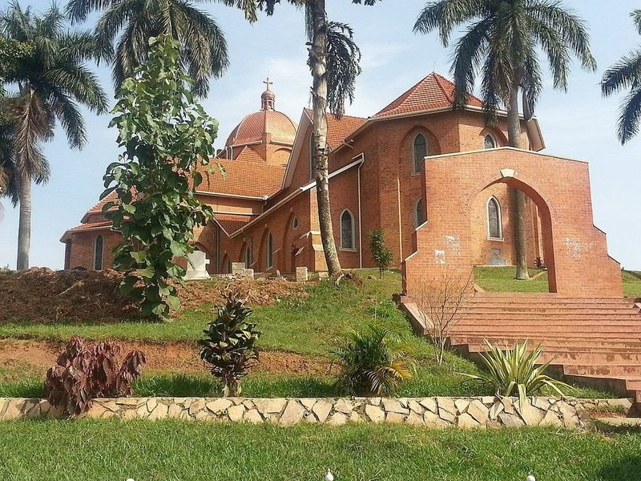
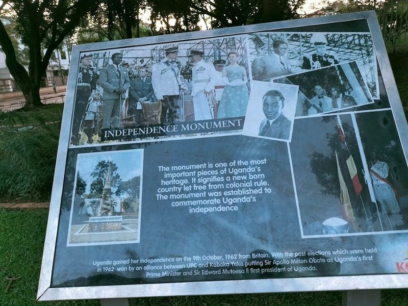
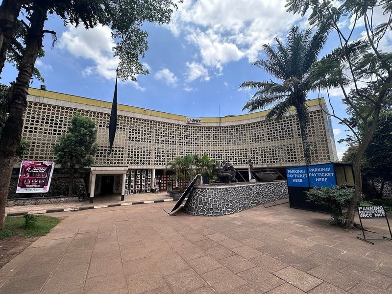
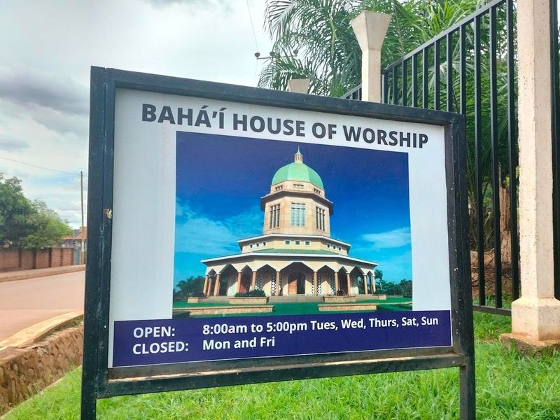
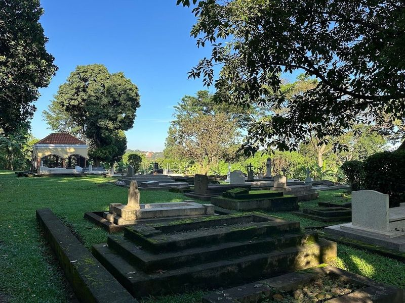

Explore Kampala
A Brief History
Kampala rose on Kasubi and Mengo hills as the seat of the Buganda kingdom before British colonial rule made it Uganda's administrative capital. Royal tombs, Anglican and Catholic cathedrals, and independence-era monuments record Ganda statecraft and twentieth-century nation-building on the Lake Victoria plateau. Kabaka trails and lake-view ridges connect Buganda royal sites to Lake Victoria basin neighbourhoods.
Attractions Map
Top Sights & Activities

Kabaka's Palace
Kabaka's Palace, also known as Lubiri Palace, is a must-visit historical and cultural attraction in Kampala. It served as the residence of the Kabakas, traditional rulers of the Buganda kingdom since the 19th century. The palace features captivating architecture that reflects the colonial era and offers guided tours showcasing historical artifacts, beautiful gardens, and even torture chambers with insightful storytelling about its rich history and culture.

St Mary's Cathedral Rubaga
St. Mary's Cathedral Rubaga, a architectural gem completed in 1925, stands proudly on Rubaga Hill, one of Kampala's seven hills. This historic Catholic church is not only the oldest but also serves as the headquarters for the Roman Catholic Archdiocese of Kampala. Visitors can enjoy views of the city from its elevated position.

Uganda Martyrs Catholic Shrine Basilica, Namugongo
Uganda Martyrs Catholic Shrine Basilica, Namugongo is a Roman Catholic basilica and memorial shrine with a unique hut-shaped exterior. The shrine commemorates the lives of 32 young men who were killed between 1885 and 1887 for refusing to renounce Christianity. The current building was constructed in 1967 and completed in 1975, officially opened by Papal envoy Sergio Cardinal Pignedoli.

Munyonyo Martyrs' Shrine - Uganda Martyrs Basilica
Nestled in the heart of Kampala, the Munyonyo Martyrs' Shrine, also known as Uganda Martyrs Basilica, stands as a poignant tribute to the Uganda Martyrs. This serene site is not only a place of worship with Sunday masses offered in both Luganda and English but also a beautiful sanctuary surrounded by meticulously maintained gardens. Visitors can find solace here amidst its tranquil atmosphere, perfect for private prayers or quiet reflection.

Uganda National Mosque
Nestled atop Kampala Hill in Old Kampala, the Uganda National Mosque, also known as the Gaddafi National Mosque, stands as a magnificent testament to Islamic architecture and culture. This grand mosque is not only the largest in East Africa but also serves as a significant landmark that reflects historical ties between Libya and Uganda.

Namirembe Cathedral
Namirembe Cathedral, located on Namirembe hill in Kampala, Uganda, is a religious structure that replaced the original grass-thatched cathedral built in 1903. As part of the Church of Uganda, it stands as a significant Anglican landmark with evangelical roots. The cathedral offers views from its elevated position and is a prominent feature on postcards of Kampala.

Independence Monument
The Independence Monument in Uganda is a significant symbol of the country's heritage and history. Situated along Speke Road in Kampala, it commemorates the granting of independence to Uganda by British colonial administrators on October 9, 1962. The monument depicts a man unwrapping and raising a child to the sky, symbolizing the birth of a new nation freed from colonization.

Kampala National Theatre
Kampala National Theatre is a hub of culture and creativity nestled in the heart of Uganda's capital. This venue comes alive on Monday nights with an exhilarating jam session that invites both seasoned musicians and daring amateurs to share their talents, creating an atmosphere brimming with joy and appreciation for music. The last Monday of each month transforms this experience into a grand festival, drawing thousands eager to witness renowned Ugandan artists perform.

Baha'i House of Worship
The Baha'i House of Worship in Kampala is not just a place of worship, but also offers guided tours to provide an understanding of the Bahai faith. It's a peaceful and culturally enriching attraction with beautiful gardens and a well-built temple on a hill. Visitors can enjoy the serene atmosphere, lush landscapes, and Sunday prayers that integrate different religions.

Kasubi Tombs
Nestled on Kasubi Hill in Kampala, the Kasubi Tombs stand as a significant cultural landmark and UNESCO World Heritage site, recognized for their historical importance in sub-Saharan Africa. This sacred burial ground is the final resting place of four Buganda kings, known as Kabakas, and other royal family members. Constructed in 1882 using traditional plant materials, the tombs feature a distinctive circular design within the Muzibu Azaala Mpanga structure.